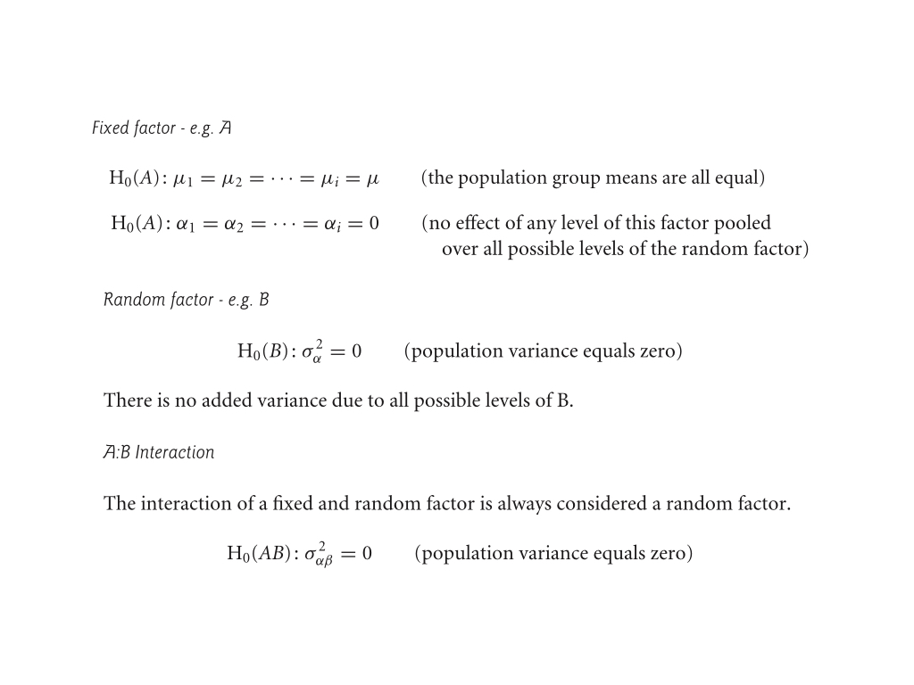
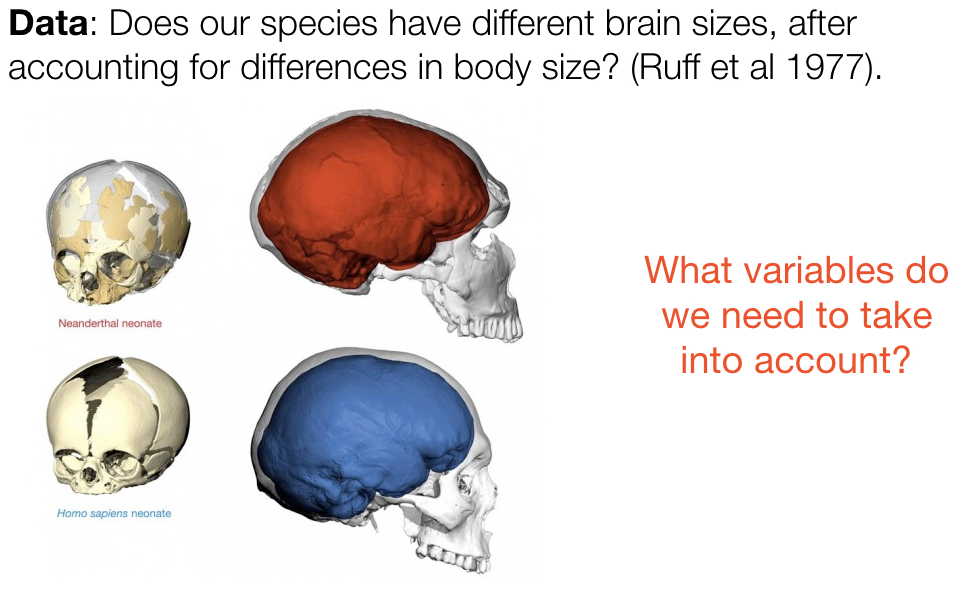
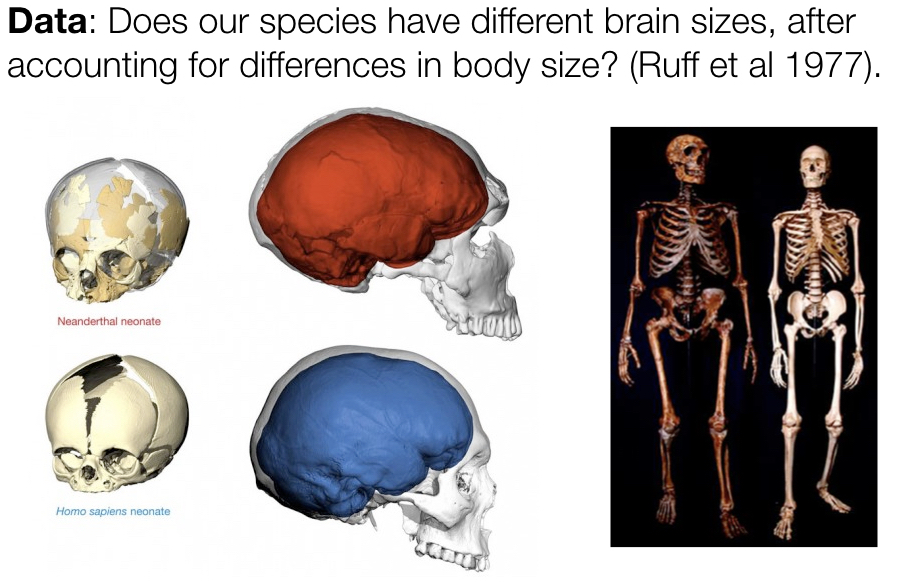
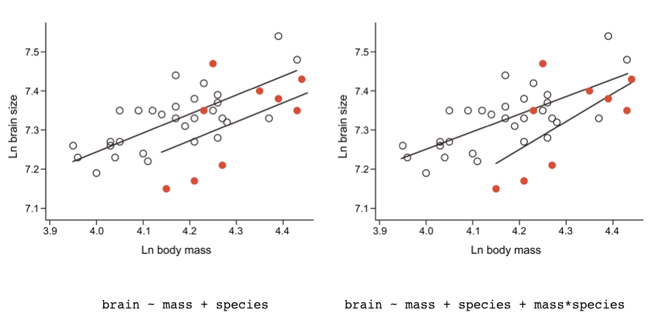

── Attaching core tidyverse packages ──────────────────────── tidyverse 2.0.0 ──
✔ dplyr 1.1.4 ✔ readr 2.1.5
✔ forcats 1.0.0 ✔ stringr 1.5.1
✔ ggplot2 3.5.2 ✔ tibble 3.2.1
✔ lubridate 1.9.4 ✔ tidyr 1.3.1
✔ purrr 1.0.4
── Conflicts ────────────────────────────────────────── tidyverse_conflicts() ──
✖ dplyr::filter() masks stats::filter()
✖ dplyr::lag() masks stats::lag()
ℹ Use the conflicted package (<http://conflicted.r-lib.org/>) to force all conflicts to become errorsWeek 8a - Statistics for Bioengineering
Bill Cresko
This week
Key principles of experimental design
Linear Mixed Models (GLMMs)
Chi-square tests
Generalized Linear Models - Logistic and Poisson Regression
Design principles for planning a good experiment
What is an experimental study?
- In an experimental study the researcher assigns treatments to units
- In an observational study nature does the assigning of treatments to units
- The crucial advantage of experiments derives from the random assignment of treatments to units
- Randomization minimizes the influence of confounding variables
- Allows us to infer cause and effect more easily (or at all)
Mount Everest example
Survival of climbers of Mount Everest is higher for individuals taking supplemental oxygen than those who don’t.
Why?
Mount Everest example
- One possibility is that supplemental oxygen (explanatory variable) really does cause higher survival (response variable).
- The other is that the two variables are associated because other variables affect both supplemental oxygen and survival.
- Use of supplemental oxygen might be a benign indicator of a greater overall preparedness of the climbers that use it.
- Variables (like preparedness) that distort the causal relationship between the measured variables of interest (oxygen use and survival) are called confounding variables
Clinical Trials
- The gold standard of experimental designs is the clinical trial
- Experimental design in all areas of biology have been informed by procedures used in clinical trials
- A clinical trial is an experimental study in which two or more treatments are assigned to human subjects
- The design of clinical trials has been refined because the cost of making a mistake with human subjects is so high
- Experiments on nonhuman subjects are simply called “laboratory experiments”or “field experiments”
Example of a clinical trial
- Transmission of the HIV-1 virus via sex workers contributes to the rapid spread of AIDS in Africa
- The spermicide nonoxynol-9 had shown in vitro activity against HIV-1, which motivated a clinical trial by van Damme et al. (2002).
- They tested whether a vaginal gel containing the chemical would reduce the risk of acquiring the disease by female sex workers.
- Data were gathered on a volunteer sample of 765 HIV-free sex-workers in six clinics in Asia and Africa.
- Two gel treatments were assigned randomly to women at each clinic:
- One gel contained nonoxynol-9
- the other was a placebo.
- Neither the subjects nor the researchers making observations at the clinics knew who received the treatment and who got the placebo.
Outcome of the clinical trial

- Note that these are count data but clinical trials could involve continuous data
- We will use these data on Thursday for our Chi-square analyses
- Also there is another variable - what is the nature of that variable?
Design components of a clinical trial
The goal of experimental design is to eliminate bias and to reduce sampling error when estimating and testing effects of one variable on another.
- To reduce bias, the experiment included:
- Simultaneous control group: study included both the treatment of interest and a control group (the women receiving the placebo).
- Randomization: treatments were randomly assigned to women at each clinic.
- Blinding: neither the subjects nor the clinicians knew which women were assigned which treatment.
- To reduce the effects of sampling error, the experiment included:
- Replication: study was carried out on multiple independent subjects.
- Balance: number of women was nearly equal in the two groups at every clinic.
- Blocking: subjects were grouped according to the clinic they attended, yielding multiple repetitions of the same experiment in different settings (“blocks”).
1. Simultaneous control group
- In clinical trials either a placebo or the currently accepted treatment should be provided.
- In experiments requiring intrusive methods to administer treatment, such as
- injections
- surgery
- restraint
- confinement
- the control subjects should be perturbed in the same way as the other subjects, except for the treatment itself, as far as ethical considerations permit.
- The “sham operation”, in which surgery is carried out without the experimental treatment itself, is an example.
- In field experiments, applying a treatment of interest may physically disturb the plots receiving it and the surrounding areas, perhaps by trampling the ground by the researchers.
- Ideally, the same disturbance should be applied to the control plots.
2. Randomization
- The researcher should randomize assignment of treatments to units or subjects
- Chance rather than conscious or unconscious decision determines which units end up receiving the treatment and which the control
- Randomization breaks the association between possible confounding variables and the explanatory variable
- Randomization doesn’t eliminate the variation contributed by confounding variables, only their correlation with treatment
- Randomization ensures that variation from confounding variables is similar between the different treatment groups.
2. Randomization
- Randomization should be carried out using a random process:
- List all n subjects, one per row, in a computer spreadsheet.
- Use the computer to give each individual a random number.
- Assign treatment A to those subjects receiving the lowest numbers and treatment B to those with the highest numbers.
- Other ways of assigning treatments to subjects are almost always inferior because they do not eliminate the effects of confounding variables.
- “Haphazard” assignment, in which the researcher chooses a treatment while trying to make it random, has repeatedly been shown to be non-random and prone to bias.
2. Randomization Types
Completely randomized design - all subjects are placed to treatment or control with equal probability
Randomized block - first broken into groups (e.g. age or gender) then assigned to treatment groups at random
Matched pair design - subjects are paired by similarity before being randomly assigned to treatment groups
2. Random sampling approaches
- Simple random sample - every sample has equal probability of being chosen
- Stratified sample - subjects are randomly divided into groups then a simple random sample are taken from each
- Cluster sample - subjects are divided into similar groups, usually naturally occurring, and then a simple random samples of clusters is then taken and every member of the cluster is included in the sample
- Multistage sampling - First clusters are random sampled, and then random samples are take from each cluster.
- Systematic sample - members of a sample are chosen in a pre-determined ways. e.g Choose every 20th person coming into a store
3. Blinding
- Blinding is the process of concealing information from participants (sometimes including researchers) about which subjects receive which treatment.
- Blinding prevents subjects and researchers from changing their behavior, consciously or unconsciously, as a result of knowing which treatment they were receiving or administering.
- For example, studies showing that acupuncture has a significant effect on back pain are limited to those without blinding.
- Reviews of medical studies have revealed that studies carried out without double- blinding exaggerated treatment effects by 16% on average compared with studies carried out with double-blinding (Jüni et al. 2001).
- Bebarta et al.(2003) reviewed 290 two-treatment experiments carried out on animals or on cell lines. The odds of detecting a positive effect of treatment were more than threefold higher in studies without blinding than in studies with blinding.
- Blinding can be incorporated into experiments on nonhuman subjects using coded tags that identify the subject to a “blind” observer without revealing the treatment (and who measures units from different treatments in random order).
3. Blinding
- In a single-blind experiment, the subjects are unaware of the treatment that they have been assigned.
- Treatments must be indistinguishable to subjects, which prevents them from responding differently according to knowledge of treatment.
- Blinding can also be a concern in non-human studies where animals respond to stimuli
- In a double-blind experiment the researchers administering the treatments and measuring the response are also unaware of which subjects are receiving which treatments
- Researchers sometimes have pet hypotheses, and they might treat experimental subjects in different ways depending on their hopes for the outcome
- Many response variables are difficult to measure and require some subjective interpretation, which makes the results prone to a bias
- Researchers are naturally more interested in the treated subjects than the control subjects, and this increased attention can itself result in improved response
4. Replication
Replication is the assignment of each treatment to multiple, independent experimental units.
The goal of experiments is to estimate and test treatment effects against the background of variation between individuals (“noise”) caused by other variables
Without replication, we would not know whether response differences were due to the treatments or just chance differences between the treatments caused by other factors.
One way to reduce noise is to make the experimental conditions constant
However, highly constant experimental conditions might not be feasible nor desirable
By limiting the conditions of an experiment, we also limit the generality of the results
Another way to make treatment effects stand out is to include extreme treatments and to replicate the data.
4. Replication
- Studies that use more units (i.e. that have larger sample sizes) will have smaller standard errors and a higher probability of getting the correct answer from a hypothesis test.
- Larger samples mean more information, and more information means better estimates and more powerful tests.
- Replication is not about the number of plants or animals used, but the number of independent units in the experiment. An “experimental unit” is the independent unit to which treatments are assigned.
- The figure shows three experimental designs used to compare plant growth under two temperature treatments (indicated by the shading of the pots). The first two designs are un-replicated.
4. (Pseudo)replication

5. Balance
- A study design is balanced if all treatments have the same sample size.
- Conversely, a design is unbalanced if there are unequal sample sizes between treatments.
- Balance is a second way to reduce the influence of sampling error on estimation and hypothesis testing.
- To appreciate this, look again at the equation for the standard error of the difference between two treatment means.
- For a fixed total number of experimental units, n1 + n2, the standard error is smallest when n1 and n2 are equal.
- Balance has other benefits. For example, ANOVA is more robust to departures from the assumption of equal variances when designs are balanced or nearly so.
6. Blocking
- Blocking is the grouping of experimental units that have similar properties. Within each block, treatments are randomly assigned to experimental units.
- Blocking essentially repeats the same, completely randomized experiment multiple times, once for each block.
- Differences between treatments are only evaluated within blocks, and in this way the component of variation arising from differences between blocks are controlled for.

What if you can’t do experiments?
- Experimental studies are not always feasible, in which case we must fall back upon observational studies.
- The best observational studies incorporate as many of the features of good experimental design as possible to minimize bias (e.g., blinding) and the impact of sampling error (e.g., replication, balance, blocking, and even extreme treatments) except for one: randomization.
- Randomization is out of the question, because in an observational study the researcher does not assign treatments to subjects.
- Two strategies are used to limit the effects of confounding variables on a difference between treatments in a controlled observational study: matching; and adjusting for known confounding variables (covariates).
- But beware - there could always be a co-variate that you didn’t include!
General Linear Mixed Models
What is a GLMM?
- General Linear Mixed Model (GLMM)
- A continuous response variable with a mix of continuous and categorical predictor variables
- GLMM’s can be used to model random effects
Attributes of mixed effects models
- Linear models that include both fixed and random effects.
- The model is split into fixed and random parts:
- Fixed effects influence mean of the response variable Y.
- Random effects influence the variance of Y.
- There is a different error variance for each level of grouping.
- Estimation and testing is based on restricted maximum likelihood, which can handle unequal sample size.
- P-values for fixed effects are conservative when design unbalanced.
- We can use
lmfor simple models (which we’ll do today) - More complicated models are better performed using the
nlme&lme4packages inR.
Assumptions of mixed-effects models
- Variation within groups follows a normal distribution with equal variance among groups.
- Groups are randomly sampled from “population” of groups.
- Group means follow a normal distribution.
- Measurements within groups are independent.
Hypotheses for Model 3 ANOVA Factorial Design With Mixed Effects
Parallel Slopes Mixed Model (aka Analysis of Covariance (ANCOVA))
Brain & body size | neaderthals as compared to humans
Brain & body size | neaderthals as compared to humans
Brain & body size | neaderthals as compared to humans
Parallel Slopes Mixed Model
- Mixture of regression and ANOVA
- Response is still a normally distributed continuous variable
- One or more continuous predictor variables (covariates)
- Sometimes the covariates are of biological interest
- Most often we want to remove unexplained variance
- In this way they are similar to a blocking variable in ANOVA
- Operationally, similar to regular ANOVA in which the group and overall means are replaced by group and overall relationships
Parallel Slopes Model - R Interlude
`geom_smooth()` using formula = 'y ~ x'Parallel Slopes Model - R Interlude
library(ggplot2)
library(tibble)
heart_rate_df <- read.csv("mouse_rat_heart.csv", header = TRUE)
model_additive <- lm(heart_rate ~ temp + species, data = heart_rate_df)
summary(model_additive)
new_heart_rate_df <- tibble(
species = c("mouse", "mouse", "mouse", "rat", "rat", "rat"),
temp = c(24, 26, 28, 24, 26, 28)
)
predict(model_additive, new_heart_rate_df)
Call:
lm(formula = heart_rate ~ temp + species, data = heart_rate_df)
Residuals:
Min 1Q Median 3Q Max
-3.0128 -1.1296 -0.3912 0.9650 3.7800
Coefficients:
Estimate Std. Error t value Pr(>|t|)
(Intercept) -7.21091 2.55094 -2.827 0.00858 **
temp 3.60275 0.09729 37.032 < 2e-16 ***
speciesrat -10.06529 0.73526 -13.689 6.27e-14 ***
---
Signif. codes: 0 '***' 0.001 '**' 0.01 '*' 0.05 '.' 0.1 ' ' 1
Residual standard error: 1.786 on 28 degrees of freedom
Multiple R-squared: 0.9896, Adjusted R-squared: 0.9888
F-statistic: 1331 on 2 and 28 DF, p-value: < 2.2e-16 1 2 3 4 5 6
79.25516 86.46067 93.66617 69.18987 76.39538 83.60088 Parallel Slopes Model - R Interlude
library(ggplot2)
library(tibble)
heart_rate_df <- read.csv("mouse_rat_heart.csv", header = TRUE)
model_interactive <- lm(heart_rate ~ temp * species, data = heart_rate_df)
summary(model_interactive)
new_heart_rate_df <- tibble(
species = c("mouse", "mouse", "mouse", "rat", "rat", "rat"),
temp = c(24, 26, 28, 24, 26, 28)
)
predict(model_interactive, new_heart_rate_df)Parallel Slopes Model - R Interlude
Call:
lm(formula = heart_rate ~ temp * species, data = heart_rate_df)
Residuals:
Min 1Q Median 3Q Max
-3.7031 -1.3417 -0.1235 0.8100 3.6330
Coefficients:
Estimate Std. Error t value Pr(>|t|)
(Intercept) -11.0408 4.1515 -2.659 0.013 *
temp 3.7514 0.1601 23.429 <2e-16 ***
speciesrat -4.3484 4.9617 -0.876 0.389
temp:speciesrat -0.2340 0.2009 -1.165 0.254
---
Signif. codes: 0 '***' 0.001 '**' 0.01 '*' 0.05 '.' 0.1 ' ' 1
Residual standard error: 1.775 on 27 degrees of freedom
Multiple R-squared: 0.9901, Adjusted R-squared: 0.989
F-statistic: 898.9 on 3 and 27 DF, p-value: < 2.2e-16 1 2 3 4 5 6
78.99389 86.49678 93.99967 69.02983 76.06475 83.09967 Parallel Slopes Mixed Model
\[ y = \beta_0 + \beta_1x_1 + \beta_2x_2 + \epsilon \] where
\[ y = \left\{ \begin{aligned} & \beta_0 + \beta_1x_1 + \epsilon \\ &(\beta_0 + \beta_2) +\beta_1x_1 + \epsilon \end{aligned} \right. \]
- Where the intercepts are different from one another but the slopes are not - R gives those estimates in that exact order
\[ y = \left\{ \begin{aligned} & -7.21091 + 3.60275x_1 \\ &(-7.21091 -10.06529) +3.60275x_1 \end{aligned} \right. \]
Interaction Mixed Model
Interaction Mixed Model
Interaction Mixed Model
`geom_smooth()` using formula = 'y ~ x'Warning: Removed 1 row containing non-finite outside the scale range
(`stat_smooth()`).Warning: Removed 1 row containing missing values or values outside the scale range
(`geom_point()`).Interaction Mixed Model
Interaction Mixed Model
Call:
lm(formula = body_mass_g ~ flipper_length_mm * species, data = penguins_sm)
Residuals:
Min 1Q Median 3Q Max
-911.18 -215.38 -42.69 162.67 1015.71
Coefficients:
Estimate Std. Error t value Pr(>|t|)
(Intercept) -3037.196 1138.679 -2.667 0.00832 **
flipper_length_mm 34.573 5.811 5.950 1.3e-08 ***
speciesGentoo -3750.085 1534.769 -2.443 0.01548 *
flipper_length_mm:speciesGentoo 20.049 7.496 2.674 0.00815 **
---
Signif. codes: 0 '***' 0.001 '**' 0.01 '*' 0.05 '.' 0.1 ' ' 1
Residual standard error: 339.2 on 187 degrees of freedom
(1 observation deleted due to missingness)
Multiple R-squared: 0.8205, Adjusted R-squared: 0.8176
F-statistic: 284.9 on 3 and 187 DF, p-value: < 2.2e-16Make a dummy data set of values for Gentoo and Chinstrap Penguins
Use the interaction model that you fit to make new predictions for those values
Interaction Mixed Model
\[ x_2 = \left\{ \begin{aligned} & 0 \qquad \text{for Chinstrap} \\ & 1 \qquad \text{for Gentoo} \end{aligned} \right. \] \[ y = \beta_0 + \beta_1x_1 + \beta_2x_2 + \beta_3x_1x_2 + \epsilon \]
\[ y = \left\{ \begin{aligned} & \beta_0 + \beta_1x_1 + \epsilon \\ &(\beta_0 + \beta_2) +(\beta_1 +\beta_3)x_1 + \epsilon \end{aligned} \right. \] - Where the intercepts are different from one another but the slopes are not - Again R gives those estimates in that exact order
\[ y = \left\{ \begin{aligned} & -3037.196 + 34.573x_1 \\ &(-3037.196 - 3750.085) + (34.573 + 20.049)x_1 \end{aligned} \right. \]
More Complicated Models
How do we factor in categorical variables?
- For a single categorical predictor, we can include effects of each factor level:
\[ y = B_0 + B_1(x~level1) + B_2(x~level2) +~... ~+ e \]
- Each factor level (ex: for Wolbachia: Yes or No) becomes it’s own “effector” that will change the value of y
- Instead of x being a continuous numerical value, for categorical data it will be either a 0 or 1
A Generalized Linear Model
- Check out the help page in RStudio for
glm()
First steps: use a glm to test Wolbachia infection
- Set up a
glm()to test for the effect of Wolbachia infection on Recombinant Fraction
First steps: use a glm to test Wolbachia infection
- What do these components mean?
fly <- read.table("Mostoufi2022_Recombination_Edit.csv", header=T, sep=',')
model <- glm(fly$RecombinantFraction ~ fly$Wolbachia, family = gaussian(link="identity"))
summary(model)
Call:
glm(formula = fly$RecombinantFraction ~ fly$Wolbachia, family = gaussian(link = "identity"))
Coefficients:
Estimate Std. Error t value Pr(>|t|)
(Intercept) 0.348054 0.005845 59.545 <2e-16 ***
fly$WolbachiaYes 0.021664 0.008474 2.557 0.0112 *
---
Signif. codes: 0 '***' 0.001 '**' 0.01 '*' 0.05 '.' 0.1 ' ' 1
(Dispersion parameter for gaussian family taken to be 0.00406577)
Null deviance: 0.94137 on 226 degrees of freedom
Residual deviance: 0.91480 on 225 degrees of freedom
AIC: -601.48
Number of Fisher Scoring iterations: 2Interpreting the GLM
- Why is our intercept significant?
- Remember that the null hypothesis is a model with an intercept and slope of 0
- How would you interpret the “WolbachiaYes” coefficient, especially the estimate and the p value?
Second steps - adding more variables
- Now let’s add Food to our model - how does this change our model results?
Second steps - adding more variables
model2 <- glm(fly$RecombinantFraction ~ fly$Wolbachia + fly$Food, family = gaussian(link = "identity"))
summary(model2)
Call:
glm(formula = fly$RecombinantFraction ~ fly$Wolbachia + fly$Food,
family = gaussian(link = "identity"))
Coefficients:
Estimate Std. Error t value Pr(>|t|)
(Intercept) 0.344691 0.008121 42.445 <2e-16 ***
fly$WolbachiaYes 0.021731 0.008504 2.555 0.0113 *
fly$FoodSucrose 0.002933 0.010481 0.280 0.7799
fly$FoodYeast 0.007366 0.010128 0.727 0.4678
---
Signif. codes: 0 '***' 0.001 '**' 0.01 '*' 0.05 '.' 0.1 ' ' 1
(Dispersion parameter for gaussian family taken to be 0.00409246)
Null deviance: 0.94137 on 226 degrees of freedom
Residual deviance: 0.91262 on 223 degrees of freedom
AIC: -598.02
Number of Fisher Scoring iterations: 2Interpreting the GLM
- How would you interpret the Intercept and Food coefficients, especially the estimate and the p value?
Interaction effects in GLMs
- You can also model interactions between two categorical variables in glms
- What if variable x and variable z interact in non-additive ways?
- Use the notation x*z in the formula
Third steps - adding interaction effects
- Let’s finally add an interaction between Wolbachia infection and Food to represent Wolbachia titer in our model
- Run the model - what are the results?
Third steps - adding interaction effects
- How do we interpret these findings?
model3 <- glm(fly$RecombinantFraction ~ fly$Wolbachia + fly$Food + fly$Wolbachia*fly$Food, family = gaussian(link = "identity"))
summary(model3)
Call:
glm(formula = fly$RecombinantFraction ~ fly$Wolbachia + fly$Food +
fly$Wolbachia * fly$Food, family = gaussian(link = "identity"))
Coefficients:
Estimate Std. Error t value Pr(>|t|)
(Intercept) 0.344520 0.009760 35.298 <2e-16 ***
fly$WolbachiaYes 0.022080 0.013970 1.581 0.115
fly$FoodSucrose 0.010286 0.014458 0.711 0.478
fly$FoodYeast 0.001256 0.014059 0.089 0.929
fly$WolbachiaYes:fly$FoodSucrose -0.015873 0.021002 -0.756 0.451
fly$WolbachiaYes:fly$FoodYeast 0.012910 0.020282 0.637 0.525
---
Signif. codes: 0 '***' 0.001 '**' 0.01 '*' 0.05 '.' 0.1 ' ' 1
(Dispersion parameter for gaussian family taken to be 0.004096248)
Null deviance: 0.94137 on 226 degrees of freedom
Residual deviance: 0.90527 on 221 degrees of freedom
AIC: -595.86
Number of Fisher Scoring iterations: 2How do we know which model to use?
- Want to be careful not to overfit your linear model (give too many variables)
- The Akaike information criterion (AIC) is a metric for comparing different models to find the best fit
- Notice the AIC score in your output?
- For more on this, take Advanced Bio Stats! Or do some reading on the internet.
R INTERLUDE | Variance components with 2 random factors using LME4
variables excluding first 5 and last 5 observations
Estimate the variance components using Restricted Maximum Likelihood (REML)
Based on the REML sd estimates, what are the relative contributions of the factors to total variance in gene expression?